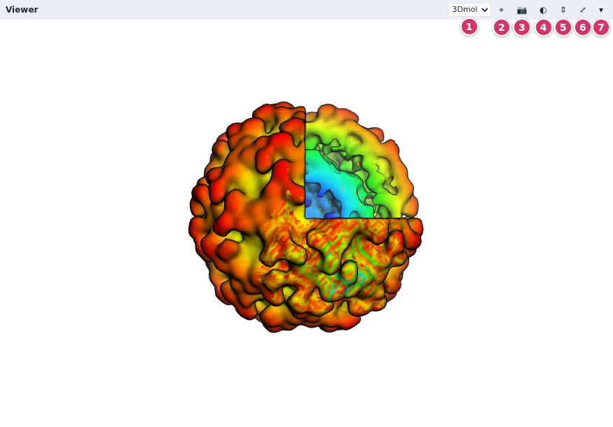
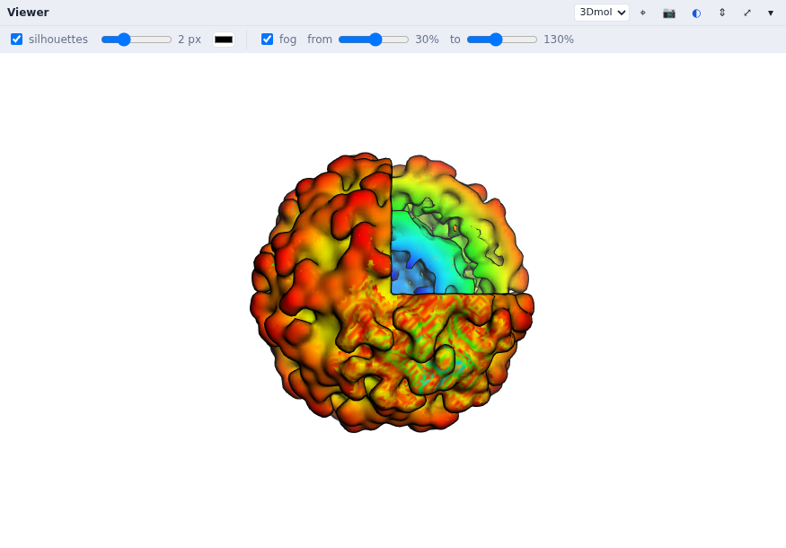
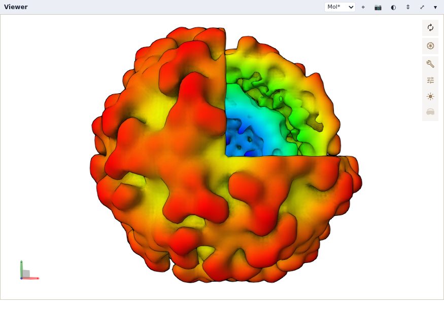

The 3D viewer
The Viewer node draws the geometries connected to it, with 3Dmol.js or Mol*; it replaces DejaVu, Vision's OpenGL viewer.
Each Viewer node (3D Visualization > Output) has a panel in the row under the
network. Connect geometries to its geometries input; it takes any number of them.
The first time it gets a scene it fits it in the view; after that the view is yours, and it is
saved with the network.
The panel

- The renderer: 3Dmol.js (the default) or Mol*.
- ⌖ fits the scene in the view.
- 📷 saves a PNG of the view, legends included.
- ◐ shows the silhouettes and fog settings (below).
- ⇕ gives the viewers the network's height too.
- ⤢ fills the window with the panel; Esc comes back.
- ▾ folds the panel.
Drag the divider above the row to share the height between the network and the panels. With 3Dmol.js, drag to turn the scene, scroll (or Shift-drag, or drag with the right button) to zoom, and Ctrl-drag (or drag with the middle button) to move it. Mol* turns with the left button, moves with the right one and zooms with the wheel.
What it draws
| from | nodes |
|---|---|
| 3D Visualization | Spheres, Cylinders (and arrows), IndPolylines (lines), IndPolygons (meshes), GlfLabels (text), box, axis; GeomContainer groups them; Set Geom Options sets their options |
| Molecules | CPK, Sticks, Lines, Cartoon, Surface (3Dmol's), MSMS: each takes atoms, a coloring (by element, chain, residue, secondary structure…) or one color per atom, an opacity, and instance matrices |
| Volume | isosurfaces (through IndPolygons), slices, bounding boxes |
| Color Map | a color bar legend (Color maps and legends) |
Copies. Every geometry node has an instanceMatrices input: given a list of
4×4 matrices (from SymServer, or from Assembly Matrices for a PDB file's biological
assembly), it is drawn once per matrix. The copies are made in the page, so 60 copies cost little
more than one.
Silhouettes and fog

Silhouettes and fog are on by default, as in DejaVu. The settings are kept with the network; node
code can set them with viewer.setRendering(outline=True, outlineWidth=2, fog=True, ...).
Mol*

Choose Mol* in the panel's menu (node code: viewer.setRenderer('molstar')).
Mol* is loaded the first time a viewer uses it (1.5 MB). It brings its rendering: ambient
occlusion (on by default), shadows, outlines, depth of field, bloom, fog, and its illumination mode.
The ◐ strip has quick switches for the main ones; Mol*'s settings button has all of them.
The choice of renderer, a camera for each renderer and Mol*'s settings are saved with the network.
Picking
Click an atom or a shape: the Viewer's lastPick output sends what was clicked (the
geometry, and for a molecule the atom, its residue and chain) to the nodes connected to it, which
run. Picked Atom (Molecules > Filter) turns it into an atom selection; the example
pick a residue draws the clicked residue's side chain as sticks. Picking works with both
renderers.
Pictures and redraws
- The 📷 button saves the view as a PNG file in your browser's downloads.
- Grab Image (Imaging > Input) takes the viewer's picture into the network, as an image for the Imaging nodes (filters, Save Image…). The picture is made by the page, so the page must be open, with the viewer showing.
- Turning or zooming the view fires the Viewer's
redrawoutput, as DejaVu's redraws did. Connect it to One Redraw, and that to Grab Image, to process each new view (see the example ViPEr paper figure 1).